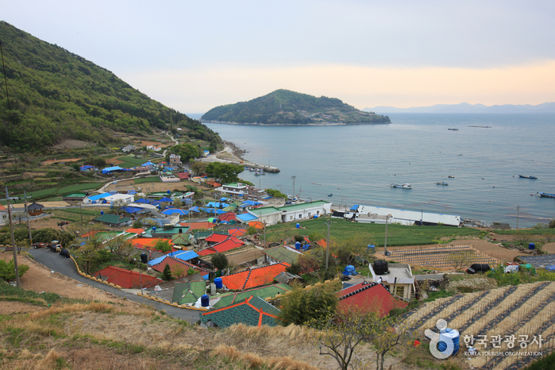
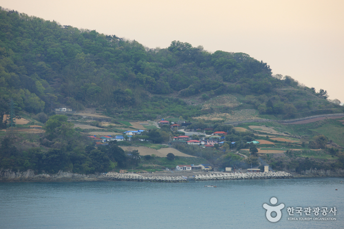
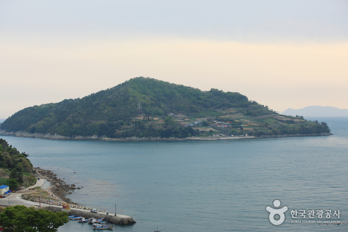

노도(김만중 유허지)
  
지역 : 경남 남해
설명 : 사씨남정기'와 '구운몽'을 썼던 작가 김만중이 유배하며 삶을 마감했던 곳.
웹사이트 링크 1:
http://tour.namhae.go.kr/00002759/00002761/00002771.web
웹사이트 링크 2:
https://place.map.kakao.com/8229558
웹사이트 링크 3:
https://goo.gl/maps/pPTjhskNjWzRVBBD8